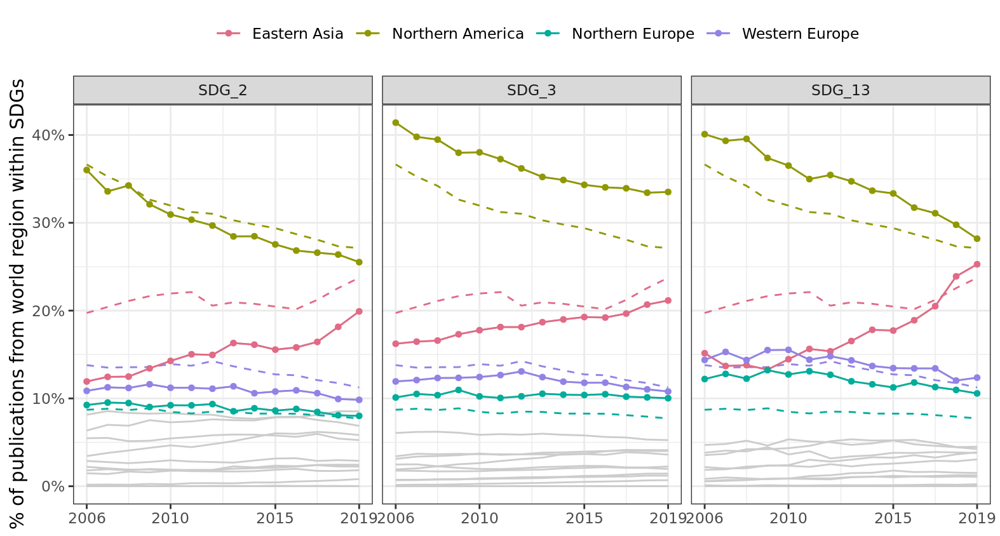

# Overall MAG datapaper_cols <-c("paperid", "rank", "doi", "type", "title_normalised", "title", "unknown1", "year", "date", "unknown2", "publisher", paste0("unknown", 3:12),"journal", paste0("unknown", c(14:16)))mag_2021_papers <-spark_read_csv(sc, "/tklebel/mag-2021-03-15/Papers.txt",name ="mag2021_papers",memory =FALSE,delimiter ="\\t", header =FALSE,columns = paper_cols)affil_cols <-c("paperid", "authorid", "affiliationid", "authorsequencenumber","originalauthor", "originalaffiliation")mag_2021_paper_author_affil <-spark_read_csv( sc, "/tklebel/mag-2021-03-15/PaperAuthorAffiliations.txt",name ="mag2021_paper_author_affil", delimiter ="\\t",memory =FALSE, header =FALSE, columns = affil_cols)# this is data to fill in country information where we do not have it from the# SDG setmissing_country_data <-spark_read_csv( sc,"/tklebel/SDG/additional_country_information.csv",name ="missing_country_data")# SDG specific datapapers <-spark_read_csv(sc, "/tklebel/SDG/sdg_papers_collated.csv",name ="papers")sdg_labels <-spark_read_csv(sc, "/tklebel/SDG/sdg_labels.csv",name ="sdg_labels")# join the labels here, since we are doing everything by SDGpapers <- papers %>%left_join(sdg_labels)
Joining with `by = join_by(paperid)`
# remove 2020papers <- papers %>%filter(year <2020)# Affiliationsaffils <-spark_read_csv(sc,"/tklebel/SDG/affiliations_with_country_code.csv",name ="affils")author_paper_affiliations <-spark_read_csv( sc,"/tklebel/SDG/sdg_author_paper_affil.csv",name ="author_paper_affiliations")# UN country informationun_countries <-read_csv2(here::here("data/external/UNSD — Methodology.csv"))
ℹ Using "','" as decimal and "'.'" as grouping mark. Use `read_delim()` for more control.
Rows: 248 Columns: 15
── Column specification ────────────────────────────────────────────────────────
Delimiter: ";"
chr (15): Global Code, Global Name, Region Code, Region Name, Sub-region Cod...
ℹ Use `spec()` to retrieve the full column specification for this data.
ℹ Specify the column types or set `show_col_types = FALSE` to quiet this message.
un_countries_selection <- un_countries %>%select(country_code =`ISO-alpha3 Code`, country_name =`Country or Area`, continent =`Region Name`, sub_continent =`Sub-region Name`)# Leiden Rankingleiden <-spark_read_csv(sc,"/tklebel/SDG/leiden_ranking.csv",name ="leiden")# World Bank datawb_indicators <-spark_read_csv( sc,"/tklebel/SDG/world_bank_indicators.csv",name ="wb_indicators")wb_countries <-read_csv(here::here("data/external/WDICountry.csv"))
New names:
Rows: 263 Columns: 31
── Column specification
──────────────────────────────────────────────────────── Delimiter: "," chr
(26): Country Code, Short Name, Table Name, Long Name, 2-alpha code, Cur... dbl
(3): National accounts reference year, Latest industrial data, Latest t... lgl
(2): PPP survey year, ...31
ℹ Use `spec()` to retrieve the full column specification for this data. ℹ
Specify the column types or set `show_col_types = FALSE` to quiet this message.
• `` -> `...31`
wb_countries_selection <- wb_countries %>%select(country_code =`Country Code`, region = Region, name =`Short Name`,income_group =`Income Group`) %>%drop_na()
Sample size
# total sample sizepapers %>%sdf_nrow()
[1] 8686773
# per SDGpapers %>%count(SDG_label)
# Source: spark<?> [?? x 2]
SDG_label n
<chr> <int>
1 SDG_2 567689
2 SDG_13 280799
3 SDG_3 7838285
Warning: Missing values are always removed in SQL aggregation functions.
Use `na.rm = TRUE` to silence this warning
This warning is displayed once every 8 hours.
`summarise()` has grouped output by 'year'. You can override using the
`.groups` argument.
date_scale <-scale_x_date(breaks =as_year(c(2006, 2010, 2015, 2019)),date_labels ="%Y")base_col ="grey80"mag_2021_subset_countries <-filter( mag_2021_normalised_region_share_time, sub_continent %in%c("Northern America", "Western Europe", "Northern Europe","Eastern Asia" ))mag_2021_normalised_region_share_time %>%ggplot(aes(as_year(year), share, group = sub_continent, colour = sub_continent)) +geom_line(colour = base_col) +geom_line(data = mag_2021_subset_countries) +geom_point(data = mag_2021_subset_countries, size =1.2) + date_scale +scale_y_continuous(labels =function(x) scales::percent(x, 1)) + colorspace::scale_color_discrete_qualitative() +theme(legend.position ="top") +labs(x =NULL, y ="% of publications from world region across MAG",colour =NULL)
Joint figure including baseline
normalised_region_share_time %>%ggplot(aes(as_year(year), share, group = sub_continent, colour = sub_continent)) +geom_line(colour = base_col) +geom_line(data = mag_2021_subset_countries, linetype =2) +geom_line(data = subset_countries) +geom_point(data = subset_countries, size =1.2) +facet_wrap(vars(fix_sdg(SDG_label))) + date_scale +scale_y_continuous(labels =function(x) scales::percent(x, 1)) + colorspace::scale_color_discrete_qualitative() +theme(legend.position ="top") +labs(x =NULL, y ="% of publications from world region within SDGs",colour =NULL)

Figure 1: Proportion of research from world regions on SDGs. The dashed line indicates the average across all of MAG
# look at relative specialisation to identify how global south is represented in# various SDGscontinent_specialisation <- normalised_region_share_time %>%rename(nn_sdg = nn, share_sdg = share) %>%mutate(year =as.character(year)) %>%left_join(mag_2021_normalised_region_share_time) %>%mutate(specialisation = share_sdg / share)
Figure 2: Specialisation of world regions. The specialisation factor is calulated by dividing the share of research towards a certain SDG by the overall share of research coming from the same region. Melanesia, Polynesia and Micronesia are omitted due to low cell counts.
`summarise()` has grouped output by 'year'. You can override using the
`.groups` argument.
normalised_income_share_time %>%ggplot(aes(as_year(year), share, group =fix_income_group(income_group), colour =fix_income_group(income_group))) +geom_line() +geom_line(data = mag_2021_normalised_income_share_time, linetype =2) +facet_wrap(vars(fix_sdg(SDG_label))) + date_scale +scale_y_continuous(labels =function(x) scales::percent(x, 1)) + colorspace::scale_color_discrete_qualitative() +theme(legend.position ="top") +labs(x =NULL, y ="% of publications from world region within SDGs",colour =NULL)
Figure 3: Proportion of research from income regions on SDGs. The dashed line indicates the average across all of MAG
Income region specialisation
# look at relative specialisation to identify how global south is represented in# various SDGsincome_group_specialisation <- normalised_income_share_time %>%rename(nn_sdg = nn, share_sdg = share) %>%mutate(year =as.character(year)) %>%left_join(mag_2021_normalised_income_share_time) %>%mutate(specialisation = share_sdg / share)
Figure 4: Specialisation of income groups. The specialisation factor is calulated by dividing the share of research towards a certain SDG by the overall share of research coming from the same income groups.
Joining with `by = join_by(paperid)`
Joining with `by = join_by(affiliationid)`
`summarise()` has grouped output by "SDG_label" and "displayname". You can
override using the `.groups` argument.
Interactively comparing institutions shows that there is specialisation across the three SDGs: certain institutions (e.g. Mayo Clinic) publish a lot in one SDG (here: SDG 3), but much less in others.
Joining with `by = join_by(paperid)`
Joining with `by = join_by(citationcount, affiliationid)`
`summarise()` has grouped output by "affiliationid" and "year". You can
override using the `.groups` argument.
Warning: There were 2 warnings in `mutate()`.
The first warning was:
ℹ In argument: `across(c(P_top10, PP_top10, impact_P), as.numeric)`.
Caused by warning:
! NAs introduced by coercion
ℹ Run `dplyr::last_dplyr_warnings()` to see the 1 remaining warning.
ℹ Using "','" as decimal and "'.'" as grouping mark. Use `read_delim()` for more control.
Rows: 25563 Columns: 7
── Column specification ────────────────────────────────────────────────────────
Delimiter: ";"
chr (6): normalizedname, displayname, university_normalized, University, Cou...
dbl (1): affiliationid
ℹ Use `spec()` to retrieve the full column specification for this data.
ℹ Specify the column types or set `show_col_types = FALSE` to quiet this message.
papers_per_affiliation_per_SDG_w_leiden <- papers_per_affiliation_per_sdg %>%mutate(affiliationid =as.numeric(affiliationid),year =as.character(year)) %>%# needed for mergingleft_join(affil_leiden_key) %>%left_join(leiden_small_local, by =join_by(University, year == last_year_of_period))
Joining with `by = join_by(affiliationid)`
Warning in left_join(., affil_leiden_key): Detected an unexpected many-to-many relationship between `x` and `y`.
ℹ Row 6392 of `x` matches multiple rows in `y`.
ℹ Row 13149 of `y` matches multiple rows in `x`.
ℹ If a many-to-many relationship is expected, set `relationship =
"many-to-many"` to silence this warning.
Inclusion into Leiden
papers_per_affiliation_per_SDG_w_leiden %>%filter(year =="2018") %>%mutate(in_leiden =if_else(!is.na(University), "matched", "unmatched")) %>%pivot_longer(starts_with("n_"), names_to ="indicator") %>%mutate(indicator =if_else( indicator =="n_frac_citations", "# of citations (fractional)","# of publications (fractional)" )) %>%ggplot(aes(SDG_label, value, fill = in_leiden)) +facet_wrap(vars(indicator)) +geom_boxplot() +scale_y_log10(labels = scales::comma) + colorspace::scale_fill_discrete_qualitative() +labs(x =NULL, y =NULL, fill ="Leiden Ranking",title ="Difference according to mapping to Leiden ranking") +theme(legend.position ="top")
Warning: Transformation introduced infinite values in continuous y-axis
Joining with `by = join_by(paperid)`
`summarise()` has grouped output by "affiliationid". You can override using the
`.groups` argument.
# match with leiden datamag_2021_papers_per_affiliation_per_SDG_w_leiden <- mag_2021_papers_per_affiliation_per_sdg %>%mutate(affiliationid =as.numeric(affiliationid)) %>%# needed for mergingleft_join(affil_leiden_key) %>%left_join(leiden_small_local, by =join_by(University, year == last_year_of_period))
Joining with `by = join_by(affiliationid)`
Warning in left_join(., affil_leiden_key): Detected an unexpected many-to-many relationship between `x` and `y`.
ℹ Row 40 of `x` matches multiple rows in `y`.
ℹ Row 12237 of `y` matches multiple rows in `x`.
ℹ If a many-to-many relationship is expected, set `relationship =
"many-to-many"` to silence this warning.
# calculate baseline data to fit current plotbaseline_data <- mag_2021_papers_per_affiliation_per_SDG_w_leiden %>%filter(!is.na(P_top10)) %>%group_by(Period) %>%mutate(across(c(P_top10, PP_top10, impact_P), cut_quantiles)) %>%group_by(year, P_top10) %>%summarise(n =sum(n_frac_papers, na.rm =TRUE)) %>%group_by(year) %>%mutate(prop = n/sum(n))
`summarise()` has grouped output by 'year'. You can override using the
`.groups` argument.
`summarise()` has grouped output by 'SDG_label', 'year'. You can override using
the `.groups` argument.
Gender
Computations for gender could not be reproduced in the current repository because the data are unavailable. The original gender-assignments were lost due to a prior server becoming defunct. However, since the code for all other computations was fully reproducible after setting up anew on a new server, I expect the results to be reproducible in principle, if the data were available. The code below is provided for illustration, but was not run recently.
Warning in left_join(., wb_local, by = c(country = "country_code")): Detected an unexpected many-to-many relationship between `x` and `y`.
ℹ Row 5 of `x` matches multiple rows in `y`.
ℹ Row 185 of `y` matches multiple rows in `x`.
ℹ If a many-to-many relationship is expected, set `relationship =
"many-to-many"` to silence this warning.
p <- oa_with_gdp_per_cap %>%filter(sum_frac_total >=50) %>%left_join(proper_countries, by =c("country"="country_code")) %>%ggplot(aes(NY.GDP.PCAP.KD, prop_oa)) +geom_point(aes(size = sum_frac_total)) +labs(x ="GDP per capita", y ="% of publications which are OA",size ="# of publications") +scale_size_continuous(trans ="sqrt", labels = scales::comma) +scale_y_continuous(labels = scales::percent) +scale_x_log10(breaks =c(1e+03, 2e+03, 5e+03, 1e+04, 2e+04, 5e+04, 1e+05),labels =function(x) scales::comma(x, prefix ="$")) +theme_bw() p1 <- p +aes(colour = region)p1 +geom_smooth(aes(colour =NULL), alpha = .3, show.legend =FALSE,colour ="grey30") +labs(colour ="World region")
`geom_smooth()` using method = 'loess' and formula = 'y ~ x'
Warning in left_join(., wb_local, by = c(country = "country_code")): Detected an unexpected many-to-many relationship between `x` and `y`.
ℹ Row 13 of `x` matches multiple rows in `y`.
ℹ Row 185 of `y` matches multiple rows in `x`.
ℹ If a many-to-many relationship is expected, set `relationship =
"many-to-many"` to silence this warning.
oa_sdg_with_gdp_per_cap %>%filter(sum_frac_total >=50) %>%left_join(proper_countries, by =c("country"="country_code")) %>%ggplot(aes(NY.GDP.PCAP.KD, prop_oa)) +geom_point(aes(size = sum_frac_total, colour = region)) +geom_smooth(alpha = .3, show.legend =FALSE, colour ="grey30") +labs(x ="GDP per capita", y ="% of publications which are OA",colour ="World region", size ="# of publications") +scale_size_continuous(trans ="sqrt", labels = scales::comma) +scale_y_continuous(labels = scales::percent) +scale_x_log10(breaks =c(1e+03, 2e+03, 5e+03, 1e+04, 2e+04, 5e+04, 1e+05),labels =function(x) scales::comma(x, prefix ="$")) +theme_bw() +facet_wrap(vars(fct_relevel(SDG_label, "SDG_13", after =3)), nrow =2) +theme(legend.position =c(.8, .2))
`geom_smooth()` using method = 'loess' and formula = 'y ~ x'